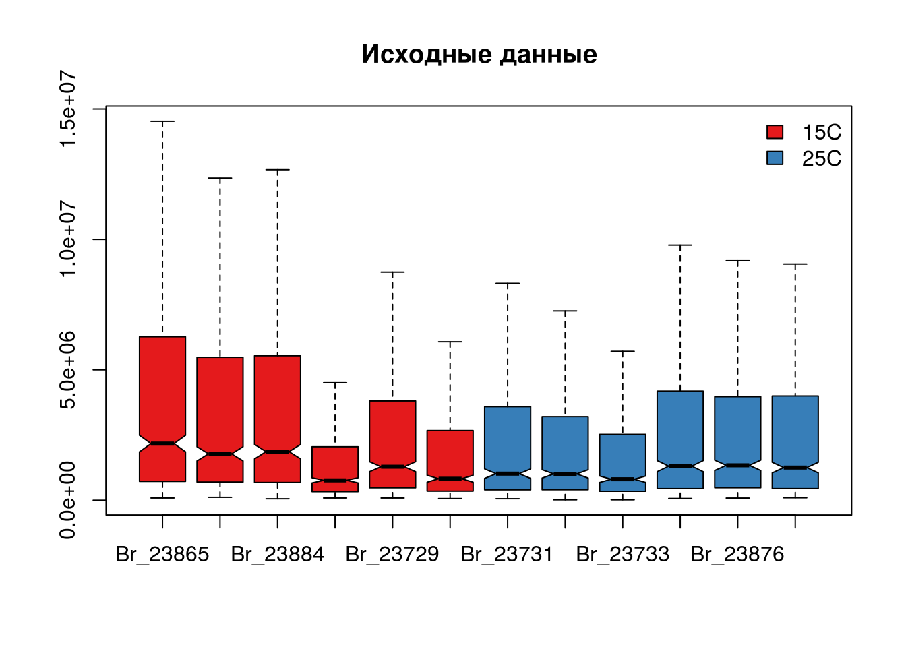
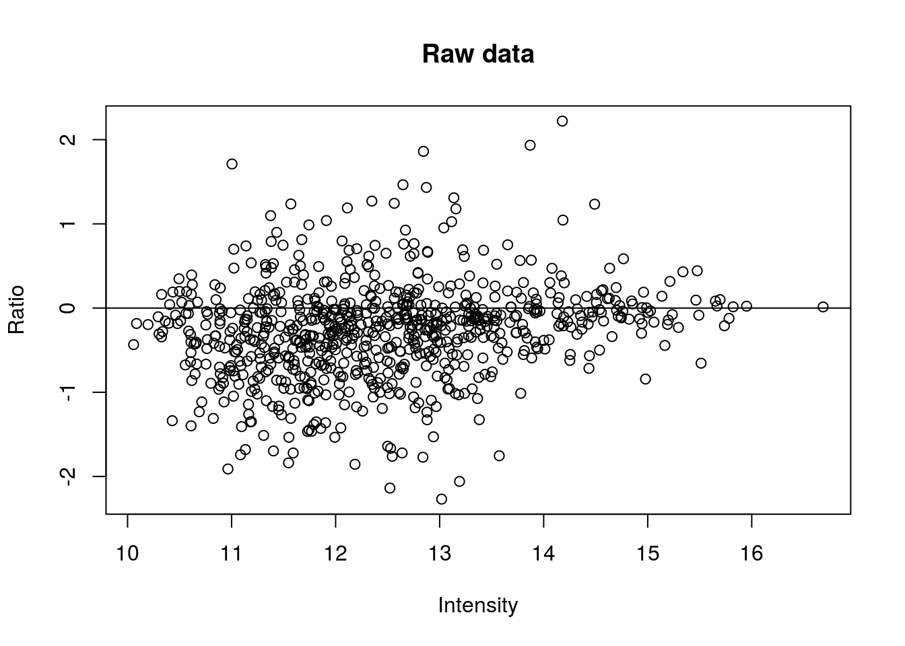
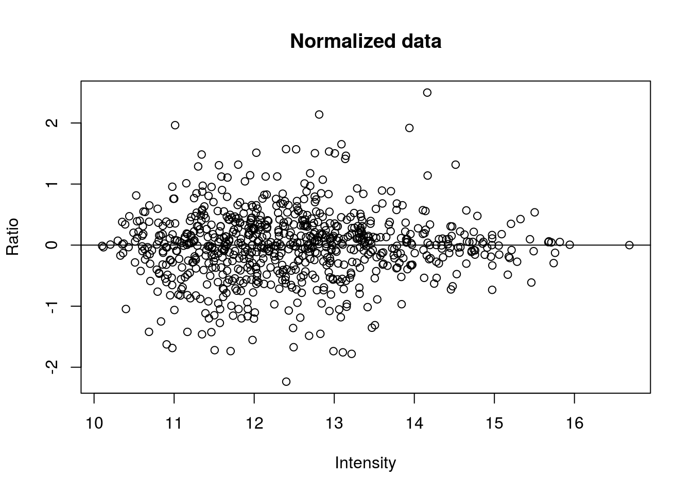
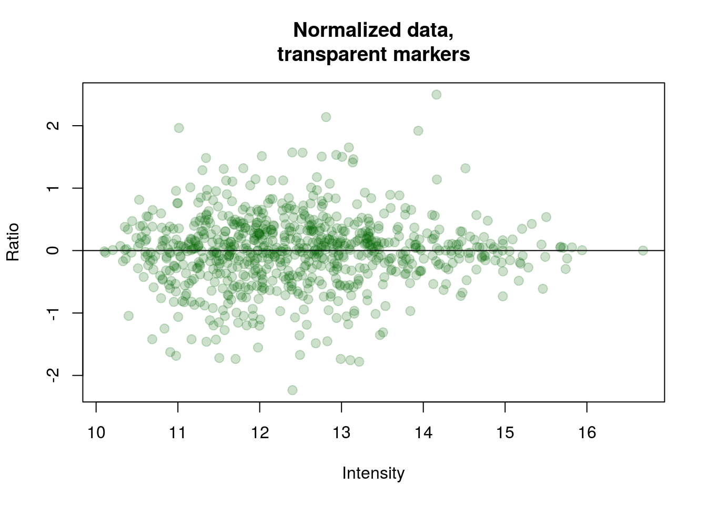
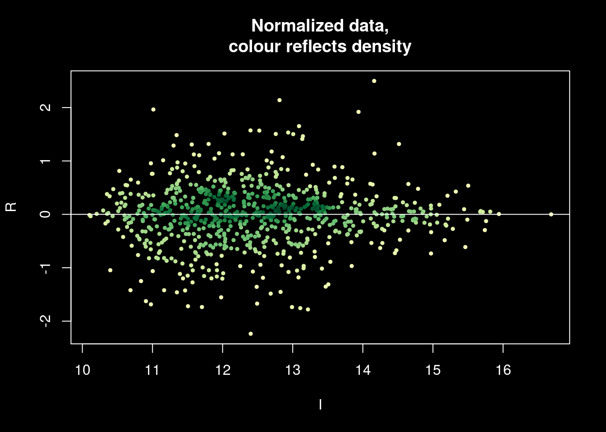
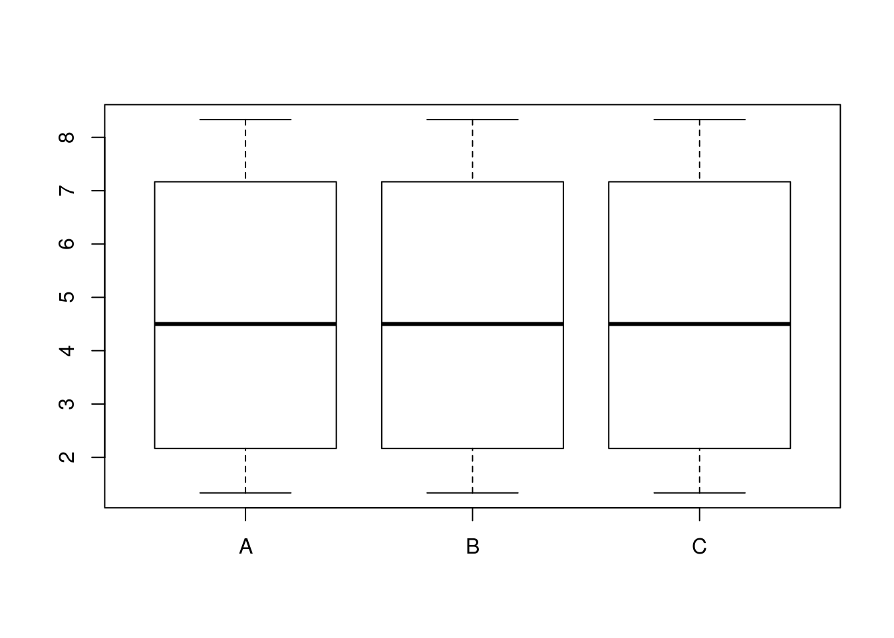

Предварительная обработка данных
Марина Варфоломеева
"---
layout: page
title: Предварительная обработка данных
tagline: Анализ протеомных данных с использованием R
---"[1] “—: page: Предварительная обработка данных: Анализ протеомных данных с использованием R—”
В этом разделе мы поговорим о том, как готовить данные 2-DIGE для статистической обработки в R (R Core Team 2016).
Пример: протеом жабр гребешка Pecten maximus
Для работы мы будем использовать данные о протеоме жабр гребешка Pecten maximus (Artigaud et al. 2013). Гребешков подвергали воздействию двух разных температур (15 и 25 градусов, по 6 гребешков в каждой группе). В этом исследовании, в общей сложности, было обнаружено 766 пятен.
Загрузим данные из пакета prot2D (Artigaud et al. 2013), и сразу посмотрим, к какому классу они принадлежат
library(prot2D)
data(pecten)
data(pecten.fac)
class(pecten)## [1] "data.frame"class(pecten.fac)## [1] "data.frame"В датафрейме pecten хранятся необработанные данные интенсивностей пятен (raw volume data), а в датафрейме pecten.fac описана принадлежность гребешков к разным вариантам экспериментальной обработки. В данном случае, всего один фактор — Condition.
dim(pecten)## [1] 766 12dim(pecten.fac)## [1] 12 1head(pecten, 2)## Br_23865 Br_23883 Br_23884 Br_23728 Br_23729 Br_23730 Br_23731
## 126 4917372 3700556 5602088 1039165 16948657 5301985 4630511
## 155 629380 538182 542741 550110 1400204 3507947 7428518
## Br_23732 Br_23733 Br_23875 Br_23876 Br_23877
## 126 12969625 2869155 1771437 2707717 7120168
## 155 2445648 947371 412389 398940 380115head(pecten.fac)## Condition
## Br_23865 15C
## Br_23883 15C
## Br_23884 15C
## Br_23728 15C
## Br_23729 15C
## Br_23730 15CИмпутация пропущенных значений.
Довольно часто бывает так, что в матрице экспрессии могут пустовать некоторые ячейки. Пятно может быть обнаружено на одном геле, но отсутствовать на других в силу различных причин. Например, в силу различий между биологическими репликами, из-за различий между техническими репликами по техническим причинам, из-за ошибок в идентификации пятен, из-за плохой изоэлектрической фокусировки, из-за малого количества белка и т.п.
Отсутствие пятна на геле может обозначать разные вещи: пептид может действительно отсутствовать, либо он отсутствует в силу технических причин, либо он все же присутствует в концентрации ниже порога определения. Отсутствие пятна на всех технических повторностях может скорее означать отсутствие пептида, в таких ячейках можно записать нули. Однако, если пропущенные значения появились в результате неправильного сопоставления пятен, то замена их нулями может исказить данные. Если мы имеем дело с истинно пропущенными значениями, то такие ячейки мы оставим пустыми, а R во время чтения данных автоматически преобразует их в NA.
Для импутации используют данные по всем техническим и биологическим репликам. После импутации можно будет усреднить технические реплики, либо анализировать их отдельно.
В нашем примере пропущенных значений нет. В этом легко убедиться при помощи комбинации из нескольких функций.
colSums(is.na(pecten))## Br_23865 Br_23883 Br_23884 Br_23728 Br_23729 Br_23730 Br_23731 Br_23732
## 0 0 0 0 0 0 0 0
## Br_23733 Br_23875 Br_23876 Br_23877
## 0 0 0 0Функция is.na() — проверяет, равно ли значение ее аргумента NA и возвращает логическое значение. is.na(pecten) вернет двумерную таблицу, в которой TRUE будет встречаться, только если соответствующий элемент в датафрейме pecten был NA. Логическим значениям TRUE и FALSE соответствуют 1 и 0. Если мы посчитаем суммы значений в каждом из столбцов таблицы при помощи функции colSums(), то мы получим число NA для каждого из них.
Чтобы можно было потренироваться заполнять пропущенные значения, нам потребуется, чтобы в датасете pecten всетаки они были, поэтому мы специально заменим случайно выбранные ячейки на NA для этого примера.
# Функция, которая заполняет NA заданную пропорцию (frac) случайно расположенных ячеек в датафрейме (dfr)
spoil <- function(dfr, frac = 0.1, seed){
# считаем число строк, столбцов
rows <- nrow(dfr)
cols <- ncol(dfr)
# сколько значений нужно заменить на NA
n_nas <- ceiling(frac * rows * cols)
set.seed(seed)
row_id <- sample(1:rows, size = n_nas, replace = TRUE)
col_id <- sample(1:cols, size = n_nas, replace = TRUE)
# заменяем на NA
sapply(seq(n_nas), function(x){dfr[row_id[x], col_id[x]] <<- NA})
return(dfr)
}
spect <- spoil(dfr = pecten, frac = 0.2, seed = 3194)Теперь можно приступать к тренировке заполнения пропущенных значений.
Ниже приведены некоторые распространенные способы заполнения пропущенных значений. Не все из них одинаково хороши, кроме того, есть и много других, помимо этого списка (см., например, Sellers and Miecznikowski 2012).
Исключение переменных, в которых есть NA
Исключение переменных, в которых есть NA (использование только “надежных” пептидов) сильно снижает “интересность” анализа, потому что многие пептиды будут исключены, останется меньше пятен.
f_na <- rowSums(is.na(spect)) < 1
ipect_none <- spect[f_na, ] Если сравнить размеры получившихся датафреймов, видно, что пришлось исключить очень много пептидов.
dim(spect)## [1] 766 12dim(ipect_none)## [1] 82 12Замена NA средними значениями
Замена NA средними значениями экспрессии данного пептида в разных образцах (mean substitution). Это довольно грубый вариант, который вносит искажения в данные.
library(Hmisc) # для функции impute
ipect_mean <- t(apply(X = spect, MARGIN = 1, FUN = impute, fun = mean))Замена NA средним по k-ближайшим соседям
Очень хорший метод импутации - замена NA при помощи среднего по k-ближайшим соседям (k-nearest neighbour averaging; Troyanskaya et al. 2001). По качеству импутации с этим методом может соперничать только баесовский метод. Метод k-ближайших соседей реализован в пакете impute на Bioconductor (Hastie et al. 2016).

Для кадого пептида с пропущенным значениями среднего по k-ближайшим соседям (Troyanskaya et al. 2001) находит k пептидов с похожим паттерном экспрессии (соседей). Соседство определяется при помощи евклидова расстояния посчитанного между генами по пробам с известной экспрессией данного пептида. Подробнее о различных способах рассчета расстояний можно прочитать в разделе 3. Может случиться так, что у некоторых похожих пептидов есть пропущенные значения экспрессии на некоторых других гелях. В этом случае, сходство между пептидами определяется как среднее сходств, рассчитанных по гелям без пропущенных для этих пептидов данных. Наконец, если вдруг так оказалость, что у нескольких похожих пептидов неизвестна экспрессия в одном и том же геле, тогда пропущенные значения алгоритм заменяет средней экспрессией по гелю.
Для импутации при помощи среднего по k-ближайшим соседям матрицу интенсивностей сначала нужно транспонировать, чтобы пробы были в строках, а пептиды в столбцах.
library(impute)
# транспонируем, чтобы пептиды были в столбцах
trans_spect <- t(spect)
knn_dat <- impute.knn(trans_spect, k = 5)
# в результате импудации получился сложный объект - список
str(knn_dat)## List of 3
## $ data : num [1:12, 1:766] 4917372 3700556 5602088 7972172 16948657 ...
## ..- attr(*, "dimnames")=List of 2
## .. ..$ : chr [1:12] "Br_23865" "Br_23883" "Br_23884" "Br_23728" ...
## .. ..$ : chr [1:766] "126" "155" "168" "285" ...
## $ rng.seed : num 3.62e+08
## $ rng.state: int [1:626] 403 558 1607712114 -2024464855 -1540701754 611210312 -1473193500 -1697763162 1220024832 1096045530 ...# нам понадобится из него взять элемент data
ipect_knn <- t(knn_dat$data)Импутация пропущенных значений при помощи байесовского анализа главных компонент
Замена NA при помощи байесовского анализа главных компонент (Bayesian principal component analysis, BPCA; Oba et al. 2003). Сравнение результатов импутации пропущенных значений при помощи различных методов показало, что этот метод — явный фаворит по качеству результата (Pedreschi et al. 2008). Байесовский анализ главных компонент реализован в пакете pcaMethods на Bioconductor (Stacklies et al. 2007).
Байесовский анализ главных компонент (BPCA) был разработан специально для заполнения пропущенных значений (Oba et al. 2003). Он состоит из двух частей: из анализа главных компонент (на основе максимизации ожидания) и байесовской модели. BPCA представляет многомерный массив векторов экспрессии в виде линейной комбинации меньшего числа главных осей и ошибки (ошибки и факторные координаты нормально распределены). Оптимальное для представления данных число главных осей находят при помощи кросс-валидации (метод называется kEstimate). Главные оси, найденные при помощи BPCA, чаще всего не будут ортогональны, в отличие от обычного PCA. Поскольку в исходной матрице есть пропущенные значения, главные оси будут состоять из известной и неизвестной частей. На заключительном этапе при помощи байесовского оценивания находят одновременно пропущенные значения, неизвестную часть главных осей и параметры нормального распределения.
В реализации BPCA из пакета pcaMethods пробы служат наблюдениями, гены — переменными, т.е. для применения BPCA нужно транспонировать матрицу экспрессии (Stacklies et al. 2007). Кроме того, нужно центрировать (вычесть среднее) и стандартизовать (разделить на стандартное отклонение) значения экспрессии в каждом столбце.
library(pcaMethods)
# транспонируем
trans_spect <- t(spect)
# центрируем и стандартизуем каждый столбец при помощи функции prep() из пакета pcaMethods.
scaled_spect <- prep(trans_spect, scale = "uv", center = TRUE, simple = FALSE)
# bpca
pc <- pca(scaled_spect$data, method="bpca", nPcs=2)
# восстановленные полные данные (центрированные и стандартизованные)
complete_obs <- completeObs(pc)
# возвращаем восстановленные данные в исходный масштаб
scaled_spect_complete <- prep(complete_obs, scale = scaled_spect$scale, center = scaled_spect$center, reverse = TRUE)
dim(scaled_spect_complete)## [1] 12 766# транспонируем обратно
ipect_bpca <- t(scaled_spect_complete)
dim(ipect_bpca)## [1] 766 12Сравнение результатов импутации разными методами.
В даном случае, у нас есть полные исходные данные, поэтому мы можем для интереса проверить, какой из методов импутации дал наилучший результат. В качестве меры ошибки мы посчитаем среднюю сумму квадратов отклонений исходных полных данных и восстановленных. (Заметьте, чтобы на самом деле адекватно оценить качество импутации нужно повторить ее много много раз — сделать бутстреп — здесь мы сделаем только грубую оценку).
# чтобы большие числа отображались как обычно (без показателя степени)
options(scipen = 9)
# именованный вектор с суммами квадратов
SS <- c(
"замена средним" = sum((pecten - ipect_mean)^2)/nrow(pecten),
"замена средним по k-ближайшим соседям" = sum((pecten - ipect_knn)^2)/nrow(pecten),
"BPCA" = sum((pecten - ipect_bpca)^2)/nrow(pecten)
)
SS[order(SS)]## замена средним по k-ближайшим соседям
## 29171931689428
## BPCA
## 44573839546191
## замена средним
## 44573839546209В данном случае, лучше всего справился с импутацией данных алгоритм замена средним по k-ближайшим соседям.
Нормализация и трансформация данных
Нормализация — очень важный этап подготовки данных. В обычной ситуации вы, скорее всего, получите уже нормализованные данные из программы анализа гелей.
Но исходные данные в нашем примере в датасете pecten не нормализованы, это можно видеть на боксплоте.
# создаем палитру и вектор цветов
library(RColorBrewer)
pal <- brewer.pal(9, "Set1")
cols <- pal[pecten.fac$Condition]
# боксплот
boxplot(pecten, outline = FALSE, notch = T, col = cols, main = "Исходные данные")
legend("topright", levels(pecten.fac$Condition), fill = brewer.pal(9, "Set1"), bty = "n", xpd = T)
Мы применим квантильную нормализацию.
library(limma)
pecten_norm <- normalizeQuantiles(pecten)
boxplot(pecten_norm, outline = FALSE, boxwex = 0.7, notch = T, col = cols, main = "Нормализованные данные")
legend("topright", levels(pecten.fac$Condition), fill = pal, bty = "n", xpd = T)
После нормализации размах варьирования величин экспрессии в разных образцах выровнялся, но распределение по-прежнему асимметрично.
Для того чтобы статистические тесты лучше работали, нужно сделать распределение данных более симметричным и похожим на нормальное. Для этого мы должны логарифмировать данные.
Обычно логарифмируют по основанию 2. С логарифмами по основанию 2 принято работать из-за удобства вычислений (числа получаются меньше по абсолютной величине) и удобства интерпретации (если мы считаем разницу логарифмов экспрессии в опыте и контроле и она равна единице, то это означает, что экспрессия различается в два раза).
Если в ваших исходных данных есть нули, то можно перед логарифмированием прибавить к ним небольшую константу, чтобы не получить -Inf. Т.е. преборазовать log2(x + 1).
pecten_log <- log2(pecten_norm)
boxplot(pecten_log, outline = FALSE, boxwex = 0.7, notch = T, col = cols, main = "Логарифмированные\nнормализованные данные")
legend("topright", levels(pecten.fac$Condition), fill = pal, bty = "n", xpd = T)После нормализации и логарифмирования распределение стало симметричным и приблизительно одинаковым во всех образцах — с данными можно работать дальше.
RI-plot (MA-plot)
MA-plot (Mean–Average plot) был изобретен для контроля качества данных экспрессии (Dudoit et al. 2002). Для протеомики он был адаптирован немного позднее и получил название RI-plot (Ratio–Intensity plot)(Meunier et al. 2005).
Сначала разберемся, как устроен MA-plot на примере исходных данных.
X1 <- pecten[, 1:6]
X2 <- pecten[, 7:12]
R <- log2(rowMeans(X2) / rowMeans(X1))
I <- log10(rowMeans(X2) * rowMeans(X1))- R — это разница уровней экспрессии в образцах
- I — это средний уровень экспрессии во множестве образцов
plot(I, R, main = "Raw data", pch = 21, xlab = "Intensity", ylab = "Ratio")
abline(h = 0)
По графику RI-plot можно оценить качество данных.
- Можно оценить наличие выбросов, отскакивающих значений.
- По наличию паттернов можно определить, нужно ли преобразовывать данные. Увеличивающийся разброс значений или искривленный график говорит о плохой нормализации.
На графике исходных данных видно, (1) чем больше уровень экспрессии, тем больше разброс различий ; (2) график искривлен — это видно по положению плотной массы точек в центре.
После нормализации проблемы практически исчезнут.
X1 <- pecten_norm[, 1:6]
X2 <- pecten_norm[, 7:12]
R <- log2(rowMeans(X2) / rowMeans(X1))
I <- log10(rowMeans(X2) * rowMeans(X1))
plot(I, R, main = "Normalized data", pch = 21, xlab = "Intensity", ylab = "Ratio")
abline(h = 0)
В пакете prot2D (Artigaud et al. 2013) есть специальная функция RIplot()
RIplot(pecten, n1 = 6, n2 = 6, main = "Raw data")RIplot(pecten_norm, n1 = 6, n2 = 6, main = "Normalized data")Боремся с оверплотингом (overplotting)
У приведенных выше графиков есть неприятные свойства — из-за того, что много точек данных 1) они накладываются друг на друга; 2) график долго рисуется, большой объем векторного файла при сохранении. Можно усовершенствовать график одним из способов.
Для решения первой проблемы — если вас волнует лишь наложение точек, но не волнует объем файла — можно сделать точки полупрозрачными.
# 1) График с полупрозрачными точками на светлом фоне
# Генерируем полупрозрачные цвета
col_btransp <- adjustcolor("darkgreen", alpha.f = 0.2)
plot(I, R, main = "Normalized data,\ntransparent markers", pch = 19, cex = 1.2, xlab = "Intensity", ylab = "Ratio", col = col_btransp)
abline(h = 0)
Второй вариант, при помощи цвета точек показать плотность их распределения. Чтобы выбросы были заметнее, можно сделать график на темном фоне. Подробнее о графических настройках par() можно посмотреть в файле справки ?graphical parameters.
Мы будем использовать Брюеровскую (Harrower and Brewer 2003) желто-зеленую палитру из пакета RColorBrewer (Neuwirth 2014).
# Генерируем цвета
library(RColorBrewer)
ramp_ylgn <- colorRampPalette(brewer.pal(9,"YlGn")[-1])
col_density <- densCols(I, R, colramp = ramp_ylgn)
# Цвет фона, осей и пр.
op <- par(bg="black", fg="white", col.axis="white", col.lab="white", col.sub="white", col.main="white")
plot(I, R, col = col_density, pch = 19, cex = 0.5, main = 'Normalized data,\ncolour reflects density')
abline(h = 0)
par(op)
Чтобы решить вторую проблему — если важно уменьшить объем файла — можно визуализировать число точек внутри гексагональных ячеек при помощи пакета hexbin (Carr et al. 2015). Подробнее о настройках можно посмотреть в справке ?gplot.hexbin
library(hexbin)
binned <- hexbin(cbind(I,R), xbins=30)
plot(binned, colramp = ramp_ylgn,
main='Normalized data,\nhexagonal binning', xlab = "Intensity", ylab = "Ratio", legend = 1)
Сохранение графиков в R
# Создаем директорию для картинок, чтобы не захламлять рабочую директорию. В данном случае, используем относительный путь.
dir.create(file.path("./figs"))
# pdf нужны размеры в дюймах
library(grid)
wid <- convertX(unit(12, "cm"), "inches")
hei <- convertY(unit(8, "cm"), "inches")
pdf("figs/f1.pdf", width = wid, height = hei, bg = "white", paper = "special", onefile = FALSE)
op <- par(cex = 0.6)
plot(I, R, main = "Normalized data", pch = 19, xlab = "Intensity", ylab = "Ratio", col = col_btransp)
abline(h = 0)
par(op)
dev.off()
# можем встроить шрифты
embedFonts(file = "figs/f1.pdf", outfile = "figs/f1emb.pdf")
# png сам умеет переводить единицы длины-ширины.
png("figs/f1.png", width = 12, height = 8, units = "cm", res = 300, type = "cairo-png")
op <- par(cex = 0.6)
plot(I, R, main = "Normalized data", pch = 19, xlab = "Intensity", ylab = "Ratio", col = col_btransp)
abline(h = 0)
par(op)
dev.off()ExpressionSet Objects
Результаты измерения интенсивности пятен на гелях обычно записываются в виде нескольких таблиц:
- Данные об интенсивности пятен — таблица p × n, где n гелей записаны в столбцах, а интенсивности p пептидов в строках.
- Данные о пробах — таблица n × q, в которой содержится информация о q свойствах проб (об экспериментальных факторах, повторностях).
- Данные о пептидах — таблица p × r, в которой описаны r свойств пептидов (например, тривиальное название, функция).
- Данные об эксперименте в целом — список произвольной длины, в котором содержатся свойства эксперимента и их значения (например, информация об экспериментальном объекте, имя экспериментатора, ссылка на публикацию и т.п.).
Класс ExpressionSet разработан специально для того, чтобы хранить данные из этих нескольких таблиц вместе. Многие пакеты с Bioconductor работают с данными в этом формате. Объекты ExpressionSet понадобятся нам позже для анализа дифференциальной экспрессии при помощи пакета limma (Ritchie et al. 2015).

Создаем ExpressionSet вручную
Давайте научимся создавать самостоятельно объекты ExpressionSet. Чтобы работать с этим классом объектов нам понадобятся функции из пакета Biobase с Bioconductor.
library(Biobase)Для создания ExpressionSet нам понадобится несколько вещей:
- Во-первых, данные об интенсивности пятен. Это просто наши (нормализованные) данные интенсивности пятен.
expr_data <- as.matrix(pecten_log)- Во-вторых, данные о пробах. Это аннотированный датафрейм (
AnnotatedDataFrame), который состоит из двух частей: датафрейм с экспериментальными факторами, информацией о повторностях и т.п., а так же метаданные, в которых записаны расшифровки названий факторов. Подробнее см. в справке?AnnotatedDataFrame
pheno_data <- pecten.fac
pheno_metadata <- data.frame(
labelDescription = c("Experimental condition"),
row.names=c("Condition"))
pheno_data <- new("AnnotatedDataFrame",
data = pheno_data,
varMetadata = pheno_metadata)- В-третьих, данные о пептидах, если они есть. В данном случае, у нас нет никакой информации о пептидах в датасете о гребешках, хотя обычно такая информация бывает (появляется после MS/MS анализа пятен). Поэтому давайте сейчас в качестве тренировки создадим таблицу с данными о пептидах с единственной переменной — номерами пятен. Имена строк в этой таблице должны совпадать с именами строк в данных об интенсивности пятен в
expr_data.
feature_data <- data.frame(Spot = rownames(pecten_norm))
rownames(feature_data) <- rownames(expr_data)
feature_metadata <- data.frame(
labelDescription = c("Spot number"),
row.names = c("Spot"))
f_data <- new("AnnotatedDataFrame",
data = feature_data,
varMetadata = feature_metadata)- В-четвертых, данные о самом эксперименте. Их особенно важно добавить, если вы вдруг собираетесь делиться данными с кем-то. Данные об эксперименте для включения в
ExpressionSetдолжны записаны в объект классаMIAME. В файле справки по этому объекту описаны названия и содержание полей (?MIAME). Мы заполним только некоторые для примера.
experiment_data <-
new("MIAME",
name="Sebastien Artigaud et al.",
lab="lab",
contact="email@domain.com",
title="Identifying differentially expressed proteins in two-dimensional electrophoresis experiments: inputs from transcriptomics statistical tools.",
abstract="Abstract",
other=list(notes="dataset from prot2D package"))Наконец, когда у нас есть все четыре элемента (на самом деле, достаточно минимум данных об интенсивности пятен), мы можем собрать из них EspressionSet. Подробнее см. в справке ?ExpressionSet
eset <-
ExpressionSet(assayData = expr_data,
phenoData = pheno_data,
featureData = f_data,
experimentData = experiment_data)Операции с ExpressionSet объектами.
class(eset)## [1] "ExpressionSet"
## attr(,"package")
## [1] "Biobase"eset # то же самое, что print(eset)## ExpressionSet (storageMode: lockedEnvironment)
## assayData: 766 features, 12 samples
## element names: exprs
## protocolData: none
## phenoData
## sampleNames: Br_23865 Br_23883 ... Br_23877 (12 total)
## varLabels: Condition
## varMetadata: labelDescription
## featureData
## featureNames: 126 155 ... 3067 (766 total)
## fvarLabels: Spot
## fvarMetadata: labelDescription
## experimentData: use 'experimentData(object)'
## Annotation:pData(eset)## Condition
## Br_23865 15C
## Br_23883 15C
## Br_23884 15C
## Br_23728 15C
## Br_23729 15C
## Br_23730 15C
## Br_23731 25C
## Br_23732 25C
## Br_23733 25C
## Br_23875 25C
## Br_23876 25C
## Br_23877 25CvarLabels(eset)## [1] "Condition"varMetadata(eset)## labelDescription
## Condition Experimental conditiontable(eset$Condition)##
## 15C 25C
## 6 6head(fData(eset))## Spot
## 126 126
## 155 155
## 168 168
## 285 285
## 315 315
## 328 328fvarLabels(eset)## [1] "Spot"featureData(eset)## An object of class 'AnnotatedDataFrame'
## featureNames: 126 155 ... 3067 (766 total)
## varLabels: Spot
## varMetadata: labelDescriptionphenoData(eset)$Condition## [1] 15C 15C 15C 15C 15C 15C 25C 25C 25C 25C 25C 25C
## Levels: 15C 25CphenoData(eset)## An object of class 'AnnotatedDataFrame'
## sampleNames: Br_23865 Br_23883 ... Br_23877 (12 total)
## varLabels: Condition
## varMetadata: labelDescriptionexprs(eset)[1:5,1:3]## Br_23865 Br_23883 Br_23884
## 126 21.47163 21.35892 21.94415
## 155 18.75859 18.49826 18.54252
## 168 19.55404 19.13246 19.92785
## 285 18.98169 18.86374 19.47428
## 315 17.26368 17.72549 17.83685Создание сабсетов
dim(eset)## Features Samples
## 766 12sub_15 <- eset[, eset$Condition == "15C"]
dim(sub_15)## Features Samples
## 766 6Сохранение файлов с данными в R
Ссылки
Artigaud, S., O. Gauthier, and V. Pichereau. 2013. Identifying differentially expressed proteins in two-dimensional electrophoresis experiments: Inputs from transcriptomics statistical tools. Bioinformatics 29:2729–2734.
Carr, D., ported by Nicholas Lewin-Koh, M. Maechler, and contains copies of lattice functions written by Deepayan Sarkar. 2015. Hexbin: Hexagonal binning routines.
Dudoit, S., J. Fridlyand, and T. P. Speed. 2002. Comparison of discrimination methods for the classification of tumors using gene expression data. Journal of the American statistical association 97:77–87.
Harrower, M., and C. A. Brewer. 2003. ColorBrewer. org: An online tool for selecting colour schemes for maps. The Cartographic Journal 40:27–37.
Hastie, T., R. Tibshirani, B. Narasimhan, and G. Chu. 2016. Impute: Impute: Imputation for microarray data.
Meunier, B., J. Bouley, I. Piec, C. Bernard, B. Picard, and J.-F. Hocquette. 2005. Data analysis methods for detection of differential protein expression in two-dimensional gel electrophoresis. Analytical biochemistry 340:226–230.
Neuwirth, E. 2014. RColorBrewer: ColorBrewer palettes.
Oba, S., M.-a. Sato, I. Takemasa, M. Monden, K.-i. Matsubara, and S. Ishii. 2003. A Bayesian missing value estimation method for gene expression profile data. Bioinformatics 19:2088–2096.
Pedreschi, R., M. L. Hertog, S. C. Carpentier, J. Lammertyn, J. Robben, J.-P. Noben, B. Panis, R. Swennen, and B. M. Nicolaï. 2008. Treatment of missing values for multivariate statistical analysis of gel-based proteomics data. Proteomics 8:1371–1383.
R Core Team. 2016. R: A language and environment for statistical computing. R Foundation for Statistical Computing, Vienna, Austria.
Ritchie, M. E., B. Phipson, D. Wu, Y. Hu, C. W. Law, W. Shi, and G. K. Smyth. 2015. limma powers differential expression analyses for RNA-sequencing and microarray studies. Nucleic Acids Research 43:doi: 10.1093/nar/gkv007.
Sellers, K. F., and J. C. Miecznikowski. 2012. Statistical Analysis of Gel Electrophoresis Data. Pages 199–216 in S. Magdeldin, editor. Gel Electrophoresis - Principles and Basics. INTECH Open Access Publisher.
Stacklies, W., H. Redestig, M. Scholz, D. Walther, and J. Selbig. 2007. PcaMethods – a bioconductor package providing pCA methods for incomplete data. Bioinformatics 23:1164–1167.
Troyanskaya, O., M. Cantor, G. Sherlock, P. Brown, T. Hastie, R. Tibshirani, D. Botstein, and R. B. Altman. 2001. Missing value estimation methods for DNA microarrays. Bioinformatics 17:520–525.